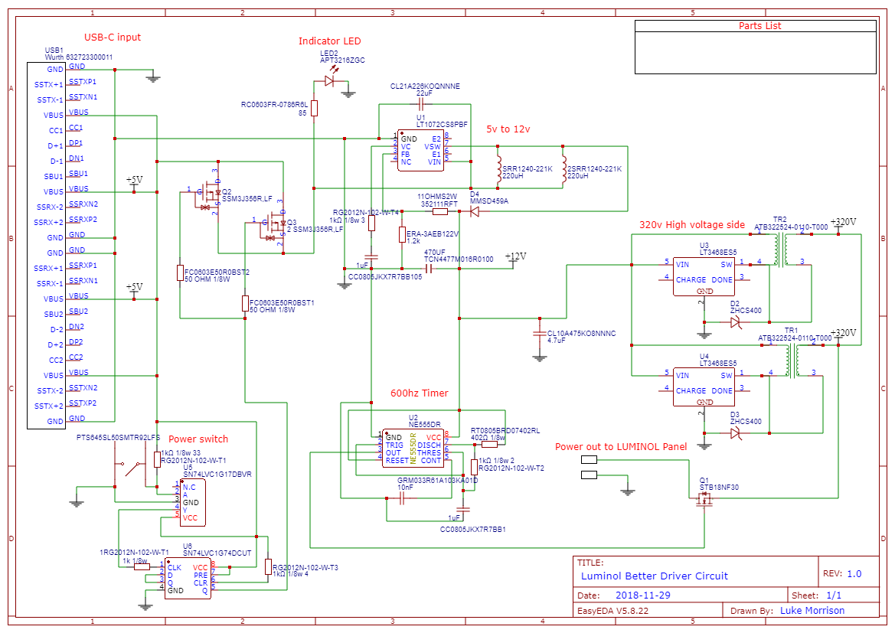
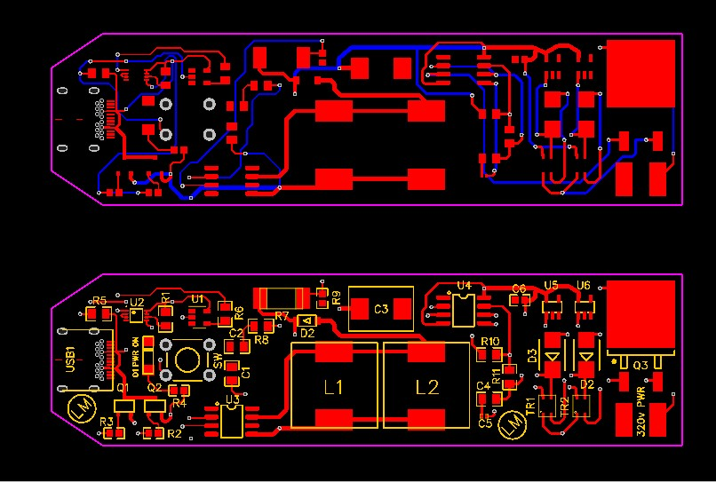
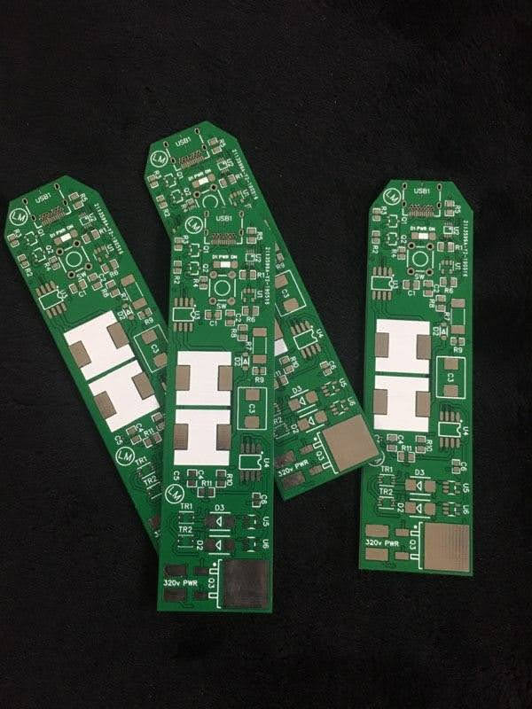
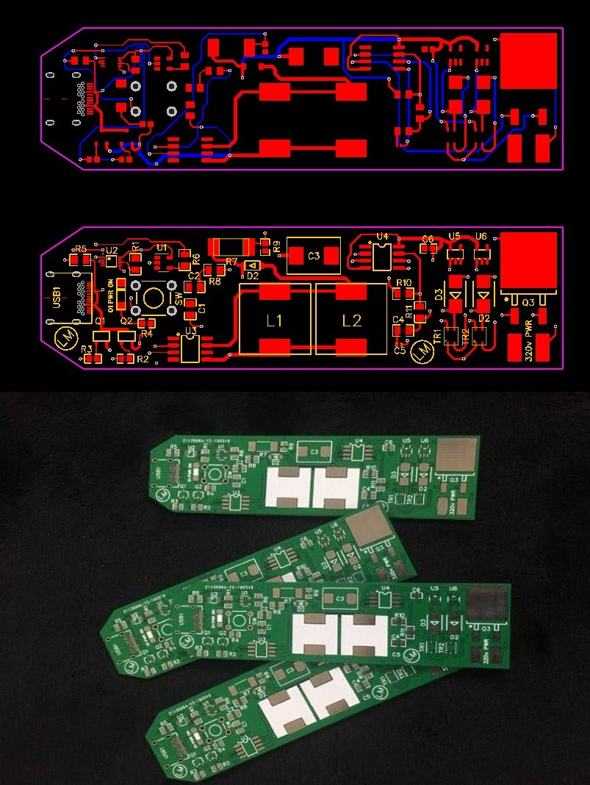
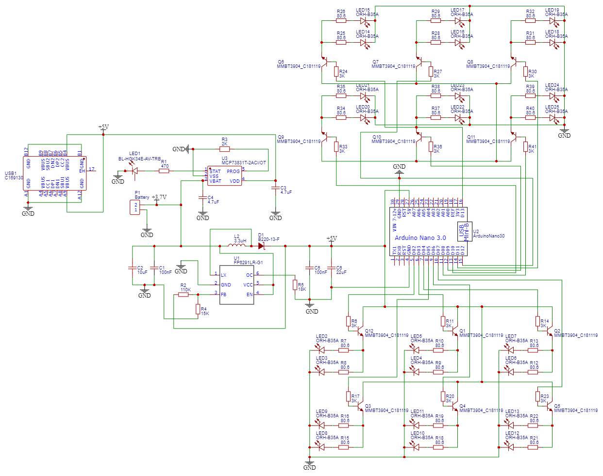
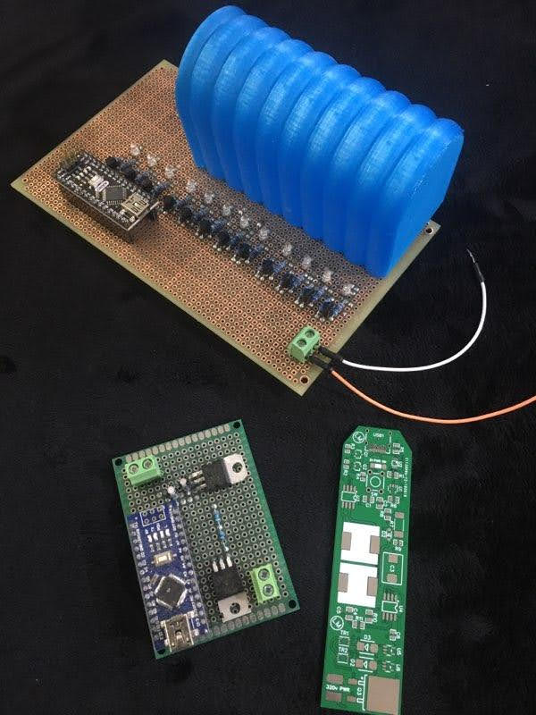

From Breadboards to PCBs
Early hardware projects from high school, including my first fabricated PCB: a USB-C-powered high-voltage inverter built to test a paintable electroluminescent lighting panel. The board was crude and only partially successful, but it marked the point where my electronics projects moved from loose wiring and breadboards into schematic capture, PCB layout, fabrication, and hand assembly.
The second project was an LED pattern controller for a Warhammer 40K plasma-rifle prop. It used an Arduino Nano as the control board and rows of 2N2222 transistors to switch LED groups on and off for animated lighting effects. A 555-timer PWM LED driver from the same era rounds out the set.

01 / 08 · SCHEMATIC
USB-C High-Voltage EL Inverter
First PCB schematic: a USB-C-powered inverter built to test a paintable electroluminescent lighting panel.

02 / 08 · LAYOUT
Two-Layer PCB Layout
Top and bottom copper layers for the inverter board, routed as a compact two-layer PCB.

03 / 08 · FABRICATION
First Boards from Fab
The first version of the inverter PCB after fabrication, before components were installed.

04 / 08 · VERIFICATION
Board vs. Layout Check
Physical boards compared against the PCB layout to check the fab result before assembly.

05 / 08 · LED CONTROLLER
Arduino LED Pattern Driver
A separate lighting controller for a Warhammer 40K plasma-rifle prop, using an Arduino Nano and 2N2222 transistors to switch LED rows.

06 / 08 · PROTOTYPE
Hand-Soldered LED Sequencer
The LED controller running animated light patterns after hand assembly and testing.
07 / 08 · ANALOG
NE555 PWM LED Driver
The 555 timer wired as a PWM generator to drive an LED through its full brightness range with a potentiometer.

08 / 08 · BENCH ARCHIVE
Other Early Builds
A snapshot of other early electronics projects from the bench.